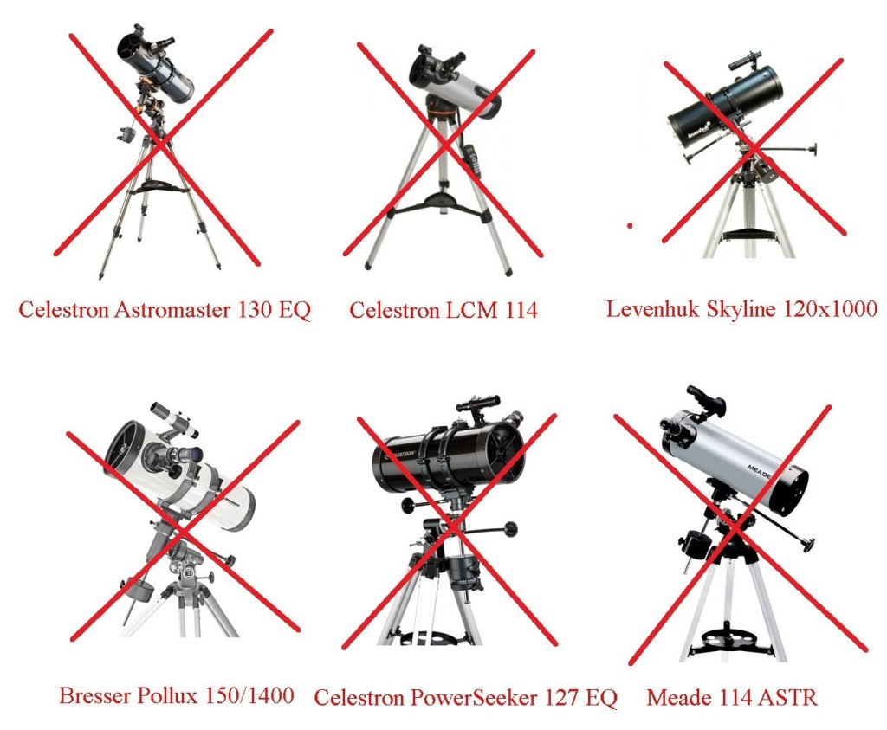
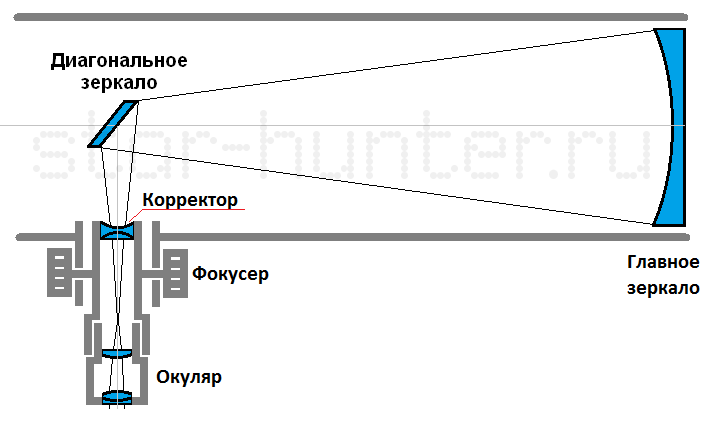
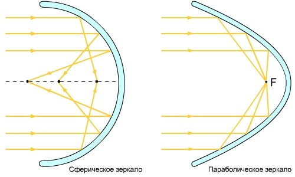
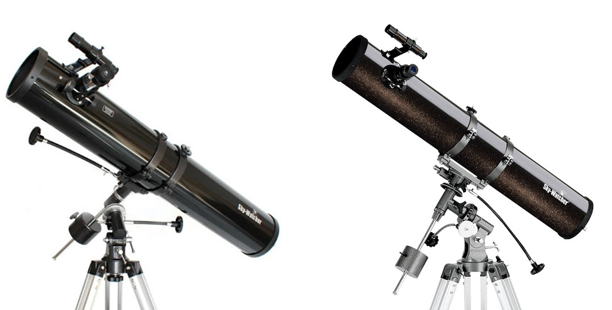

Черный список телескопов. Плохие телескопы, не рекомендуемые новичкам
Эти телескопы не рекомендуются к покупке!
В данном списке находятся модели телескопов, у которых, на мой взгляд, есть серьёзные недостатки в конструкции, оптической схеме или особенностях использования, и которые не подходят для начинающих любителей астрономии. Список я составил на основе своего личного опыта использования различных телескопов. Продавцы в магазинах могут либо умолчать об этих недостатках, либо просто не знать о них. Дабы обезопасить начинающих любителей астрономии от «впаривающих» хлам магазинов и продавцов, я написал данную статью.
Основную часть списка составляют так называемые «Ньютоны с корректором». В их конструкции применяется светосильное зеркало сферической формы и небольшая линза-корректор, исправляющая искажения главного зеркала. К сожалению, корректор не всегда работает хорошо, поэтому изображение на среднем и большом увеличении может быть размытым, окруженным бликами и ореолами. В принципе, такой телескоп можно довести «до ума», однако начинающему любителю астрономии это вряд ли по силам.
Телескоп системы Ньютона корректором (Бёрд-Джонс)
Поэтому правильным выбором будет телескоп либо со сферическим зеркалом и длинной трубой, либо с параболическим зеркалом. Запомните — длина трубы зеркального телескопа системы Ньютона примерно равна фокусному расстоянию. Если фокусное расстояние заявлено 1000 мм, то и труба должна быть длиной около 1000 мм. Если труба короткая, а фокусное расстояние заявлено большое — то в ней наверняка есть корректор. Если же труба у телескопа короткая, но и фокусное расстояние вроде небольшое — всё равно будьте осторожны — в таких телескопах могут поставить просто сферическое зеркало.
Ход лучей в сферическом и параболическом зеркале.
В то же время есть ряд телескопов других оптических систем, которые оборудованы корректором, но он со своей задачей справляется. Это телескопы систем Максутова-Кассегрена, Шмидта-Кассегрена, Максутова-Ньютона, Шмидта-Ньютона, Клевцова. Телескопы системы Максутова-Кассегрена, Шмидта-Кассегрена и Клевцова отличаются короткой трубой и большим фокусным расстоянием — это нормально. Такие телескопы можно приобретать без опасений, хотя имеет место некоторый разброс качества оптики.
Также существуют специализированные корректоры комы, которые вставляются в фокусер телескопа. Кома — это вид искажений, при которых звезды по краям поля зрения выглядят как птички (V). Корректоры комы обычно используются со светосильными параболическими телескопами системы Ньютона (Sky-Watcher BKP150750EQ3-2, Sky-Watcher BKP2001EQ5) либо в визуальном, либо в фотографическом режиме. Пример корректоров комы — Baader MPCC II, Televue Paracorr II.
Вторая часть черного списка — это линзовые телескопы-ахроматы с высокой светосилой. Линзовым телескопам свойственна хроматическая аберрация — цветной ореол, окружающий яркие объекты (Луна, планеты). Чем больше фокусное расстояние линзового телескопа при том же диаметре объектива, тем слабее и меньше хроматический ореол. Для специализированных применений светосильные ахроматы подойдут (наблюдения галактик, туманностей, скоплений с небольшим увеличением, наземные наблюдения), однако для наблюдений и съемки планет такие телескопы я не рекомендую. Хроматизм можно уменьшить или устранить при помощи желтого светофильтра, либо специальных фильтров типа Baader Fringe Killer, однако при этом искажается натуральный цвет — объекты приобретают желтоватый оттенок. Также хроматизм не особо бросается в глаза при наблюдении Марса и Сатурна. Для астрофотографии газовых туманностей со светосильными ахроматами может быть полезен CLS фильтр — он отсекает фиолетовые ореолы, а также ослабляет городскую засветку. Также светосильные ахроматы вполне пригодны для узкополосной съемки в линии водорода (H-alpha) и кислорода (OIII). Хроматизма лишены зеркальные и зеркально-линзовые телескопы, а также апохроматические рефракторы.
Синий ореол вокруг Луны — хроматизм

Снимок Юпитера, полученный через ахроматический рефрактор Sky-Watcher SK1201EQ5. Синий ореол вокруг планеты — хроматизм.
Телескопы Sky-Watcher BK804AZ3и BK809AZ3 — телескопы с одинаковым диаметром, но различным фокусным расстоянием (светосилой)
Также во вторую часть черного списка попадают телескопы слишком маленького диаметра — менее 60 мм. Да, что-то они покажут (кратеры на Луне, например), однако фактически это «игрушки». Лучше добавить и взять телескоп с объективом от 70 мм и более. Лично сталкивался со случаями, когда родители приходили в магазин с 15-летним сыном за телескопом «не дороже 5000р» и на полном серьезе хотели купить такой игрушечный телескоп для школьника. Такой телескоп вообще отобьет желание увлекаться астрономией (так как в «телескоп ничего не видно»).
Также я не рекомендую телескопы на слишком хлипких и неустойчивых монтировках. Стабильность изображения очень важна для успешных астрономических наблюдений, так как как при постоянной тряске не удается рассмотреть объект более детально. К сожалению, большинство телескопов на комплектной монтировке трясутся при фокусировке, при прикосновении к трубе или от ветра. Для визуальных наблюдений этого может быть вполне достаточно, однако некоторые модели телескопов бывают на разных монтировках. К примеру, Sky-Watcher BK1149EQ1 и Sky-Watcher BK1149EQ2 при идентичных оптических трубах отличаются монтировками и ценой. Монтировка EQ2, хоть и не слишком стабильна, но всё же лучше и грузоподъемнее, чем EQ1. Если есть выбор между двумя схожими оптическими трубами, но различными монтировками, то лучше брать более грузоподъемную. Другой пример — Celestron PowerSeeker 80 EQ и Sky-Watcher BK809EQ2. Оптические трубы идентичны, а монтировки отличаются и у Sky-Watcher она крепче.
Телескопы Sky-Watcher BK1149EQ1 и Sky-Watcher BK1149EQ2 — одинаковые оптические трубы, но разные по устойчивости монтировки
Разумеется, итоговый выбор телескопа всё равно за тобой, начинающий исследователь космоса. Я надеюсь, что мой чёрный список телескопов поможет тебе сделать осознанный выбор, а твой новый телескоп подарит тебе множество приятных впечатлений. Я желаю тебе ясного неба и успехов в изучении космоса!
- Рефлекторы
- Bresser Pluto 114/500 EQ — светосильное сферическое зеркало
- Bresser Pluto II 114/500 EQ (carbon) — светосильное сферическое зеркало
- Bresser Pollux 150/1400 EQ2 (carbon) — корректор
- И многие другие.. сылка на статью и на полный список в подвале
- Рефракторы
Bresser Messier AR-152S/760 (EXOS-2/EQ5) — светосильный ахроматBresser Junior 50/600 silver — слабая монтировкаВторой уровень class bracer Celestron Travel Scope 50 — маленький диаметр, вместо монтировки — фотоштативCelestron NexStar 102 GT-SA светосильный ахроматCelestron NexStar 102 SLT — светосильный ахроматCelestron INSPIRE 100AZ REFRACTOR TELESCOPE — светосильный ахроматMeade ETX-80 — светосильные ахроматыВторой уровень Meade Infinity 80 мм — светосильный ахроматMeade Infinity 102 мм — светосильный ахромат
- Катадиоптрики